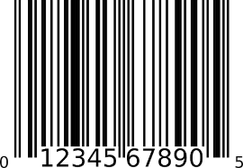

My Maltese is called Don Tot. Don Tot means egg custard in Chinese - a delicious pastry. I got Don Tot when it was still a few weeks old from a pet store in Brooklyn. He is potty trained and will sit and stay when asked. Don Tot is playful and friendly with everyone. He gets a little shy when meeting other dogs and will stay close to me. Don Tot loves to run around in circles and chase after toys. Don Tot is hyper and sometimes will run into a wall. Don Tot would sleep in my bed every night and would bark nonstop if I said he can't. I had to give up my maltese because of personal reasons. I still miss my Don Tot.
FREE BAG OF WOOF WOOF treats with this coupon.
Valid 1 per customer. While supplies last. Valid until 12/12/2019.
